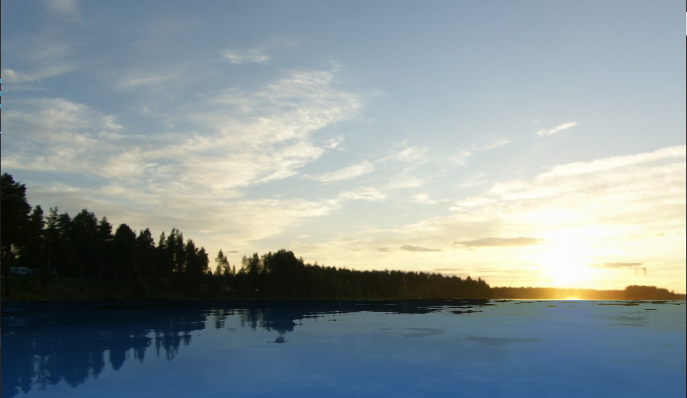

Research
My current research focuses on the interdisciplinary area of generative AI and physics-based simulation. To be more specific, I aim to enhance current image/video generative models with real-world physics knowledge, enabling
the generation of more physically plausible contents.
|
|
|
PhysMotion: Physics-Grounded Dynamics From a Single Image
Xiyang Tan*,
Ying Jiang*,
Xuan Li* (Equal Contributions),
Zeshun Zong,
Tianyi Xie,
Yin Yang,
Chenfanfu Jiang
arXiv, 2024
project page /
arXiv
PhysMotion is a novel framework that leverages principled physics-based simulations to guide intermediate 3D representations generated from a single image and input conditions (e.g., applied force and torque), producing high-quality, physically plausible video generation.
|
|

|
Real-Time Ocean Surface Simulation Based on GPGPU and IFFT
Xiyang Tan,
advisor:
Renjie Chen
Bachelor Thesis (written in Chinese), 2023
code and paper
We apply Inverse Fast Fourier Transform (IFFT) algorithm on the Phillips spectrum on GPU to simulate ocean surface in real-time.
|
Miscellaneous
I'm a huge fan of sports, especially badminton. I was trained professionally as a badminton player since I was 8, and I was entitled national second-class badminton player
back in high school. I won the third place in Men's Doubles at the Youth Badminton Tournament of Sichuan Province, and I won gold medal in BUCS badminton winter tournament as a member of
LU Badminton men's first team.
I also enjoy other sports like volleyball, basketball and Formula 1. I was a starting setter at USTC volleyball team, and we won second place in University Volleyball Tournament of Anhui Province.
|
|
{kind=link}